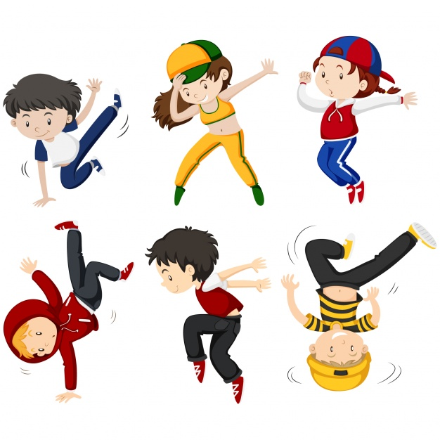

My Hobby
Dancing is my hobby as it unleashes the expressions of my soul.
Since my childhood days, I grasped the art of dancing and performed in various shows.
The appreciation of the people and the awards I won through dancing performances gives me joy.
My mother inspires me a lot, and being a dance choreographer, educates me about dancing.
My first dance performance in my childhood days was one of the most memorable days of my life.
We performed in a group, and we were also praised with appreciation by the teachers.
To frame your dancing moves and transform as a good dancer, one requires hard work, patience, and practice.
Dancing requires a real sense of creativity and innovation, as you need to perform various dance moves and complement your performance with the perfect attire to impress the audience.
There are countless dance types today, and learning of each type requires knowledge of respective dance rhythms and moves.
N.HAASIKA